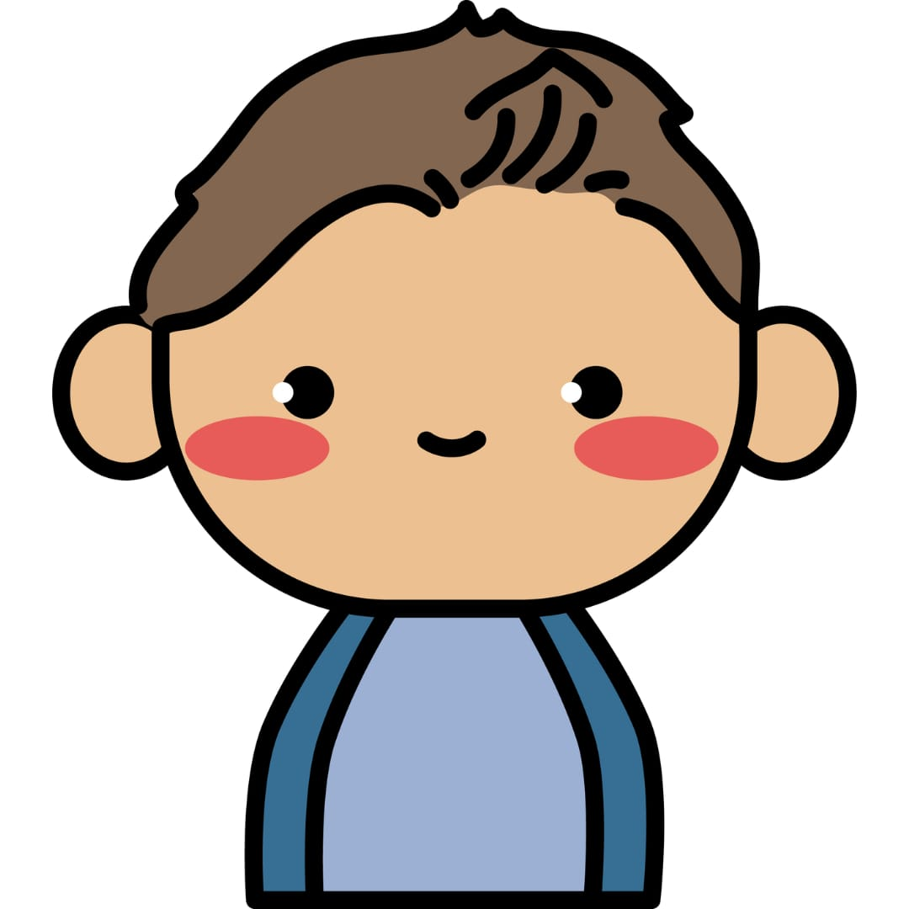
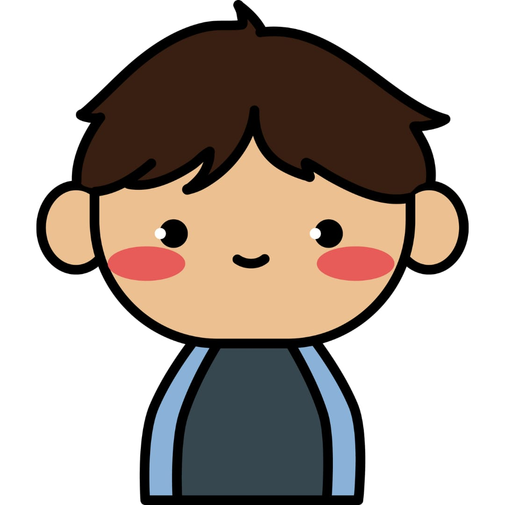
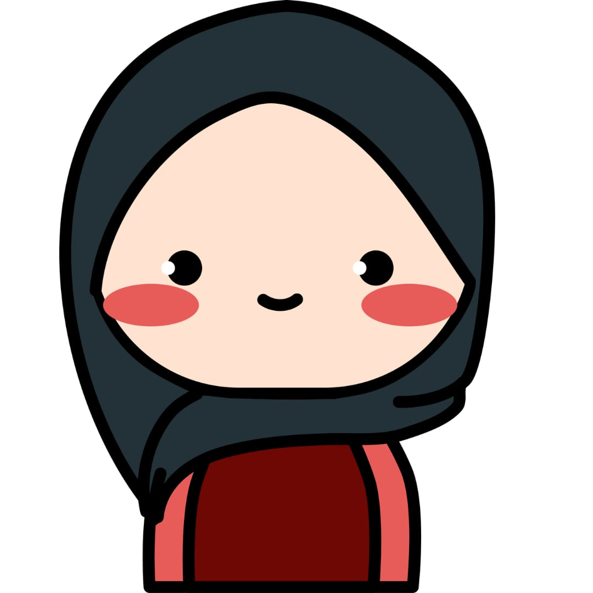
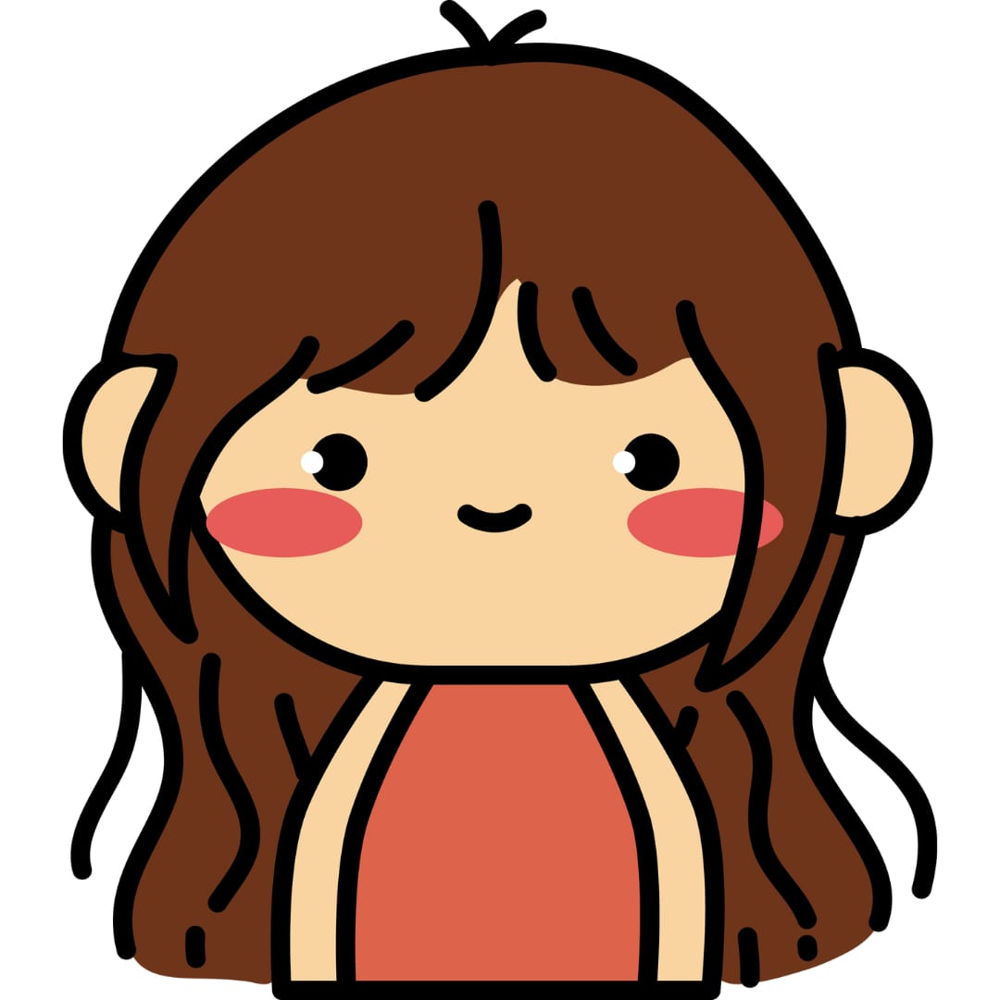
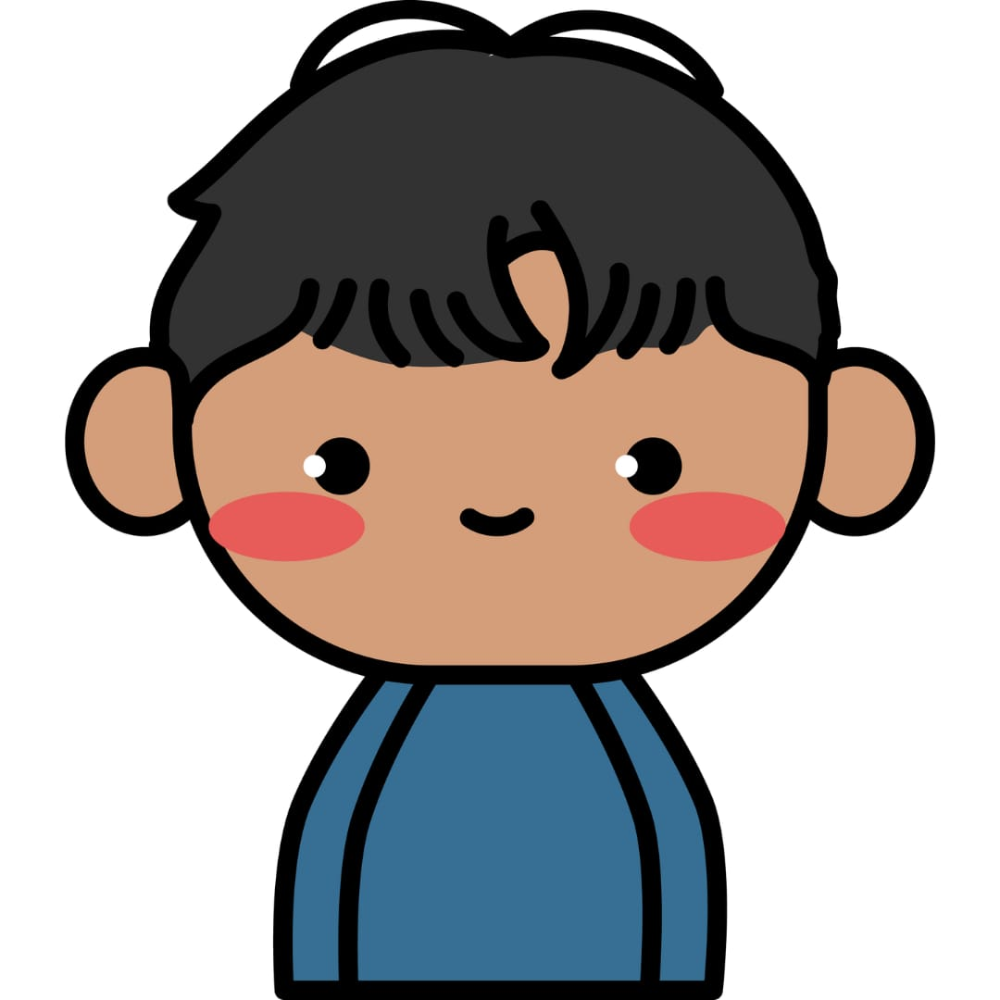

Website ini dibuat atas dasar waktu adalah hal yang berharga dan tidak bisa diulang. Manajemen waktu sangat dibutuhkan untuk menghargai waktu. Oleh karena itu, kami membuat website untuk memudahkan anda dalam membuat to do list. Anda bisa menuliskan tugas atau kegiatan yang perlu dilakukan dan menambahkan batas waktu dan juga notes. Selain itu, anda juga bisa menyortir tugas apa saja yang perlu dilakukan pada tanggal yang anda tentukan.

Waktu diibaratkan seperti sungai, kita tidak bisa menyentuh air yang sama untuk kedua kalinya karena air yang telah mengalir akan terus mengalir pergi dan tidak akan pernah kembali

Hmm, Harum Wangi cantik berseri, Malam ni Aku nak Nugas dulu

Do it now. Sometimes later becomes never

"Tidak ada waktu yang tepat" Waktu yang tepat adalah ketika kita memutuskan untuk bertindak.

Waktu berjalan dengan cara yang tidak bisa dipercepat atau diperlambat, yang bisa kita kontrol adalah bagaimana kita mengisinya.